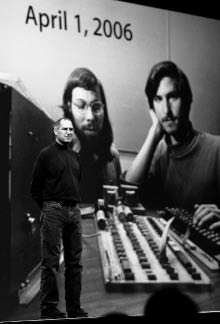

Miras
Mucitliğin En Aydınlık Göğü

2006 Macworld’de kendisiyle Wozniak’ın otuz yıl
önce çekilmiş bir fotoğrafının slaytının önünde.
FireWire
Jobs’ın yarattığı ürünler kişiliğini yansıtıyordu. Nasıl Apple’ın temel felsefesi (1984’teki Macintosh’tan bir nesil sonraki iPad’e dek tüm ürünlerinde görüldüğü gibi) donanımla yazılımı uçtan uca entegre etmekse, Steve Jobs için de aynısı geçerliydi: Kişiliği, tutkuları, mükemmeliyetçiliği, olumsuz yönleri, arzuları, sanatçılığı, şeytanlığı ve kontrol takıntısı iş hayatına yaklaşımıyla ve bunun sonucu olan yenilikçi ürünlerle iç içeydi.
Jobs’ın kişiliğiyle ürünlerini birbirine bağlayan birleşik alan kuramı, onun en belirgin özelliğiyle başlar: tutkusuyla. Sessizlikleri bağırıp çağırmaları kadar azarlayıcı olabiliyordu; gözlerini kırpıştırmadan bakabilmeyi öğrenmişti. Bu tutkusu bazen –örneğin Bob Dylan’ın müziğinin derinliğinden veya tanıttığı bir ürünün neden Apple’ın şimdiye kadar ürettiği en muhteşem şey olduğundan bahsederken– teknoloji fanatiklerine özgü bir şekilde şirin olabiliyordu. Bazense korkutucuydu, örneğin Google’ın veya Microsoft’un Apple’ı taklit etmesine verip veriştirdiğinde.
İhtiraslı kişiliği onu dünyayı siyah ya da beyaz olarak görmeye yöneltiyordu. İş arkadaşlarının söylediğine göre insanları ikiye ayırırdı: kahramanlar ve bok kafalılar. Ya biriydiniz, ya diğeri; bazen aynı gün içinde ikisi de olabiliyordunuz. Aynı şey ürünler, fikirler, hatta yiyecekler için de geçerliydi: Bir şey ya “gelmiş geçmiş en iyi şey”di, ya da boktandı, salaktı, yenmezdi. Dolayısıyla kusur olarak gördüğü herhangi bir şey ağzına geleni söylemesine yol açabiliyordu. Bir metal parçasının cilası, bir vidanın başının kıvrımı, bir kutunun mavisinin tonu, bir navigasyon ekranının tasarımı –bütün bunların “tamamen berbat” olduğunu söylüyordu, ta ki birden, “kesinlikle kusursuz” olduklarını söyleyiverene dek. Kendini sanatçı olarak görüyordu (öyleydi de zaten) ve sanatçıların mizacına sahipti.
Kusursuzluk arayışını onu, Apple’ın ürettiği tüm ürünleri en ufak ayrıntısına kadar kontrol etmeye kadar götürdü. Muhteşem Apple yazılımlarının başka şirketlerin berbat donanımlarında çalıştırıldığını düşündükçe kötü oluyordu ve aynı şekilde, onaylanmamış app’lerin ya da içeriklerin Apple cihazlarının kusursuzluğunu bozmalarını da hiç istemiyordu. Donanımı, yazılımı ve içeriği entegre edip tek bir komple sisteme dönüştürme yetisi sadeliği dayatabilmesini sağladı. Gökbilimci Johannes Kepler, “Doğa sadeliği ve bütünlüğü sever,” demişti. Bu Steve Jobs için de geçerliydi.
Entegre sistemlere yönelme içgüdüsü onu dijital dünyadaki en temel ayrımda, açıkla kapalının karşıtlığında taraf olmaya yöneltti. Homebrew Bilgisayar Kulübü’nün mirası olan hacker etiği, açıklık yaklaşımını benimsiyordu; bu yaklaşımda merkezi kontrol çok azdı ve insanlar donanımla yazılımı modifiye etmekte, kodları paylaşmakta, açık standartlara yazmakta, patentli sistemlerden uzak durmakta ve çeşitli cihazlarla ve işletim sistemleriyle uyumlu içeriklerle app’lere sahip olmakta serbesttiler. Genç Wozniak bu kamptandı: Tasarladığı Apple II kolayca açılabiliyordu ve bol bol slotla porta sahipti. Jobs ise Macintosh’u üretmekle diğer kampın kurucu babası oldu. Macintosh beyaz eşya gibi olacaktı, donanımla yazılım yakından entegre ve modifikasyonlara kapalı olacaktı. Sorunsuz ve basit bir kullanıcı deneyimi yaratmak uğruna hacker etiği feda edilecekti.
Dolayısıyla Jobs Macintosh işletim sisteminin diğer şirketlerin donanımlarında çalışmamasına karar verdi. Microsoft ise bu stratejinin tam tersini benimseyerek, Windows işletim sisteminin lisansını önüne gelene verdi. Bu yaklaşım çok zarif bilgisayarların doğmasına yol açmasa da, Microsoft’un işletim sistemleri dünyasına egemen olmasını sağladı. Apple’ın pazar payı yüzde beşin altına düşünce, kişisel bilgisayar dünyasında Microsoft galip ilan edildi.
Ancak Jobs’ın modelinin bazı avantajları olduğu uzun vadede ortaya çıktı. Apple küçük pazar payıyla bile epey yüksek bir kâr marjı elde edebiliyordu; diğer bilgisayar üreticileriyse metalaşmışlardı. Örneğin 2010’da Apple, kişisel bilgisayar pazarının toplam gelirinin sadece yüzde yedisini elde etmesine karşın, toplam kârın yüzde 35’ine sahip oldu.
Daha da önemlisi, Jobs’ın 2000’lerin başında uçtan uca entegrasyonda diretmesi, Apple’ın dijital bir merkez stratejisi geliştirmekte avantajlı olmasını sağladı; bu strateji, masaüstü bilgisayarınızın çeşitli taşınabilir cihazlara sorunsuzca bağlanabilmesini sağlıyordu. Örneğin iPod kapalı ve oldukça entegre bir sistemin parçasıydı. Onu kullanabilmek için Apple’ın iTunes yazılımını kullanmanız ve iTunes Store’dan içerik indirmeniz gerekiyordu. Sonuç olarak iPod, tıpkı daha sonra gelen iPhone’la iPad gibi, rakiplerin sürtünmesiz şekilde uçtan uca deneyim sunamayan yetersiz ürünlerine kıyasla zarif ve tatminkârdı.
Bu strateji işe yaradı. Mayıs 2000’de Apple’ın piyasa değeri Microsoft’unkinin yirmide biriydi. Mayıs 2010’daysa Apple Microsoft’u geçerek dünyanın en değerli teknoloji şirketi oldu. Eylül 2011’de Microsoft’tan yüzde 70 değerliydi. 2011’in ilk çeyreğinde Windows PC pazarı yüzde bir küçülürken, Mac pazarı yüzde 28 büyüdü.
Mobil cihazlar dünyasında yeniden savaş çıkmıştı. Google açıklık yaklaşımını benimsedi ve Android işletim sistemini bütün tablet ve cep telefonu üreticileri için kullanılabilir kıldı. 2011’de mobil pazarındaki payı Apple’ınki kadardı. Android’in açıklığının dezavantajı yol açtığı fragmentasyondu. Çeşitli el aygıtı ve tablet üreticilerinin modifikasyonları sonucunda ortaya düzinelerce Android varyasyonunun çıkması, app’lerin tutarlı kalmalarını ve tüm özelliklerinin kullanılabilmesini zorlaştırdı. İki yaklaşımın da avantajları vardı. Bazı insanlar daha açık sistemler kullanabilme özgürlüğünü ve daha çok donanım seçeneğine sahip olmayı istiyorlardı; diğerleriyse Apple’ın daha basit arayüzlere, daha uzun batarya ömrüne, daha fazla kullanım rahatlığına ve daha kolay kullanılabilen içeriklere sahip ürünler yaratılmasını sağlayan sıkı entegrasyonunu ve kontrolünü yeğliyorlardı.
Jobs’ın yaklaşımının dezavantajı, kullanıcıyı fazlasıyla memnun etme arzusu yüzünden ona yetki vermekten kaçınmasıydı. Açık ortamın en etkileyici argümanlar sunan savunucularından biri, Harvard’dan Jonathan Zittrain’dir. İnternetin Geleceği –Ve Bu Geleceği Engellemenin Yolları adlı kitabına Jobs’ın iPhone’u tanıtmasından bahsederek başlar ve kişisel bilgisayarların yerine “bir kontrol ağına bağlanmış steril elektronik aletleri” koymanın tehlikelerinden bahseder. Boing Boing’de “Neden iPad Satın Almayacağım” adlı bir manifestosu yayımlanan Cory Doctorow daha da ileri gidiyor ve “Tasarımı çok zekice, üstünde epey düşünülmüş. Ama kullanıcının küçümsendiği belli oluyor,” diye yazıyor. “Çocuklarınıza bir iPad alınca, insanın dünyayı parçalayıp baştan birleştirebileceğini anlamalarını kolaylaştırmış olmuyorsunuz; çocuklarınıza bataryaları değiştirme işini bile profesyonellere bırakmak gerektiğini söylüyorsunuz.”
Jobs entegrasyon yaklaşımına gönülden inanıyordu. “Böyle şeyleri kontrol manyağı olduğumuz için yapmıyoruz,” diye açıkladı. “Muhteşem ürünler üretmek istediğimiz için, kullanıcıyı önemsediğimiz için ve başka insanlar gibi berbat şeyler üretmek yerine deneyimin tamamının sorumluluğunu üstlenmekten hoşlandığımız için yapıyoruz.” İnsanlara hizmet ettiğine de inanıyordu: “Onlar en iyi yaptıkları şeyleri yapmakla meşguller ve bizim de en iyi yaptığımız şeyi yapmamızı istiyorlar. Hayatları yoğun; bilgisayarlarıyla cihazlarını entegre etmekten başka yapacak bir sürü işleri var.”
Bu yaklaşım Apple’ın kısa vadeli ticari çıkarlarına ters düşüyordu bazen. Ama berbat cihazlarla, kullanışsız yazılımlarla, anlaşılmaz hata mesajlarıyla ve sinir bozucu arayüzlerle dolu bir dünyada, cezbedici kullanıcı deneyimleri sunan muhteşem ürünlerin geliştirilmesini sağladı. Bir Apple ürününü kullanmak Kyoto’daki, Jobs’ın bayıldığı Zen bahçelerinden birinde yürümek kadar olağanüstü olabiliyordu ve bu iki deneyimin de kaynağı açıklığa tapmak ya da binlerce çiçeğin açmasına göz yummak değildi. Bazen bir kontrol manyağının ellerinde olmak güzeldir.
Jobs’ın ihtirası odaklanma yeteneğinde de görülüyordu. Önceliklerini belirliyor, dikkatini lazer gibi onlara yöneltiyor ve dikkat dağıtıcı şeyleri ayıklıyordu. Bir şey –orijinal Macintosh’un kullanıcı arayüzü, iPod’la iPhone’un tasarımları, müzik şirketlerini iTunes Store’a katmak– ilgisini çekti mi, asla pes etmezdi. Ama bir şeyle ilgilenmiyorsa da –sinir bozucu yasal bir sorun, iş meselesi, kanser teşhisi, ailevi bir çekişme– onu kararlılıkla yok sayıyordu. Odaklanma yeteneği hayır diyebilmesini sağlıyordu. Apple’ı tekrar başarılı kılmayı birkaç temel ürün hariç her şeyi iptal ederek başardı. Tuşları eleyerek cihazları, özellikleri eleyerek yazılımları ve seçenekleri eleyerek arayüzleri sadeleştirdi.
Odaklanma yeteneğini ve sadelik tutkusunu Zen eğitimine bağlıyordu. Bu eğitim sezilere daha çok kulak vermesini sağlamış, ona dikkat dağıtıcı ya da gereksiz her şeyi elemeyi öğretmiş ve minimalist estetik anlayışını beslemişti.
Maalesef Zen eğitimi Zen sükunetine veya içsel dinginliğe ulaşmasını asla sağlamadı ki, bu da mirasının parçası. Genellikle oldukça gergin ve sabırsızdı, ve bunu gizlemeye çalışmıyordu. Çoğu insanın zihinleriyle ağızlarının arasında, kaba duygularıyla sivri güdülerinin sesini kısan bir düzenleyici bulunur. Jobs’ta bu yoktu. Tamamen dobra olmayı önemsiyordu. “Benim işim bir şey berbatsa onu allayıp pullamak değil, berbat olduğunu söylemek,” dedi. Bu onu karizmatik ve etkileyici kılıyordu, ama bazen de (teknik tabiriyle söylemek gerekirse) tam bir dallama olmasına yol açıyordu.
Andy Hertzfeld bir keresinde bana, “Steve’in yanıtlamasını gerçekten istediğim tek soru şu: ‘Neden bazen o kadar zalim davranıyorsun?’” demişti. Ailesi bile merak ediyordu; Jobs’ın –insanları incitici düşüncelerini ifade etmekten alıkoyan– filtresi hiç mi yoktu, yoksa bu filtreyi bilerek mi devre dışı bırakıyordu? Jobs ilkinin doğru olduğunu savunuyordu. “Ben buyum ve olmadığım biri olmamı bekleyemezsin benden,” diye karşılık verdi, ona bu soruyu sorduğumda. Ama bence istese kendini kontrol edebilirdi. İnsanları incitmesinin sebebi duygusal farkındalıktan yoksun olması değildi. Tam tersine: İnsanların içini okuyabiliyordu, akıllarından geçenleri anlayabiliyordu ve onlarla nasıl empati kuracağını, onları nasıl ikna edebileceğini ya da incitebileceğini biliyordu.
Kişiliğinin kötü yönü gerekli değildi. Ona faydadan çok zararı dokundu. Ama bazen işe yaradığı oluyordu. Başkalarıyla zıtlaşmaktan korkan, kibar ve yumuşak başlı liderler değişim dayatmakta o kadar etkili değillerdir genelde. Jobs’ın en çok azarladığı düzinelerce iş arkadaşı, yaşadıkları korkunç olayları anlattıktan sonra şunu söylüyordu; Jobs, hayal bile edemeyecekleri şeyleri başarmalarını sağlamıştı.
Steve Jobs destanı, Silikon Vadisi’nin yaradılış destanıdır: Garajda temelini attığı bir şirketi dünyanın en değerli şirketine dönüştürmesinin destanıdır. Doğrudan icat ettiği çok şey olmasa da fikirleri, sanatı ve teknolojiyi geleceği icat edecek şekilde birleştirmekte ustaydı. Grafik arayüzlerin gücünü Xerox’un yapamadığı bir şekilde takdir ettikten sonra Mac’i tasarladı ve cebinizde bin şarkı taşımanın keyfini her türlü imkâna ve mirasa sahip olan Sony’nin asla yapamadığı bir şekilde kavradıktan sonra iPod’u yarattı. Bazı liderler yenilikleri genel tabloyu görebilmeleri sayesinde dayatırlar. Bazılarıysa bunu ayrıntı ustası olmakla başarır. Jobs iki yoldan da azimle gitti. Bunun sonucunda otuz yılda devasa endüstrileri değiştiren bir dizi ürün sürdü piyasaya:
• Apple II Wozniak’ın devre kartının sadece amatör bilgisayar fanatiklerine yönelik olmayan ilk kişisel bilgisayara dönüştürülmüş haliydi.
• Macintosh ev bilgisayarı devrimini başlattı ve grafik kullanıcı arayüzlerini popülerleştirdi.
• Oyuncak Hikâyesi ve Pixar’ın diğer gişe bombaları dijital hayal gücünün mucizelerini sergilediler.
• Apple mağazaları, mağazaların markaları biçimlendirmekteki rolünde çığır açtı.
• iPod müziği tüketme şeklimizi değiştirdi.
• iTunes Store müzik endüstrisinin yeniden doğmasını sağladı.
• iPhone cep telefonlarını müzik, fotoğraf, video, e-posta ve internet aygıtlarına dönüştürdü.
• App Store yeni bir içerik yaratma endüstrisinin doğmasına yol açtı.
• iPad tablet bilgisayarcılığı başlattı ve dijital gazeteler, dergiler, kitaplar ve videolar için bir platform sundu.
• iCloud bilgisayarın içeriğimizi yönetmemizdeki merkezi rolünü iptal etti ve bütün cihazlarımızın sorunsuzca senkronizasyonunu sağladı.
• Apple’ın kendisiyse (ki Jobs onu en büyük eseri olarak görüyordu) hayal gücünün öyle yaratıcı şekillerde beslenip uygulandığı bir yerdi ki, dünyanın en değerli şirketine dönüştü.
Jobs zeki miydi? O bir dahiydi. Hayal gücü sıçrayışları içgüdüsel, beklenmedik ve zaman zaman büyülüydü. Matematikçi Mark Kac’ın büyücü dahiler dediği, zihinsel uslamlama sürecinin ötesinde sezi gerektiren parlak fikirleri durup dururken akıl ediveren insanlara bir örnekti. Bir yol bulucu gibi verileri özümseyip, rüzgârları koklayıp ileride neler yattığını sezebiliyordu.
Dolayısıyla Steve Jobs zamanımızın bir yüzyıl sonra hatırlanacağı en kesin olan şirket yöneticisine dönüştü. Tarih onu panteonda Edison’la Ford’un yanına koyacak. Tamamen yenilikçi olan ürünler yaratmayı, şiirin ve mikroişlemcilerin güçlerini birleştirmeyi dönemindeki herkesten çok daha iyi başardı. Onunla çalışmayı ilham verici olduğu kadar huzursuz edici de kılabilen bir vahşilikle, dünyanın en yaratıcı şirketini inşa etti. Ve şirketin DNA’sına mükemmeliyetçiliği, hayal gücünü ve tasarıma yönelik duyarlılığı katmayı başardı; böylece bu şirket onyıllar sonra bile en çok sanatçılıkla teknolojinin kesiştiği noktada başarılı olmayı sürdürecek muhtemelen.
Ve Bir Şey Daha...
Genellikle biyografi yazarları son sözü söylerler. Ama bu bir Steve Jobs biyografisi. Her ne kadar Jobs efsanevi kontrol tutkusunu bu projeye dayatmasa da, onu tarihin sahnesine son sözlerini söylemesine izin vermeden çıkarırsam tarzını –herhangi bir durumda kendini ön plana çıkarmasını– yeterince hissettirmemiş olurum.
Sohbetlerimiz sırasında, bırakacağı mirasın ne olacağını umduğu üstüne defalarca konuştu. İşte düşünceleri, kendi ağzından:
Hedefim, bünyesindeki insanları muhteşem ürünler üretmeye teşvik eden, kalıcı bir şirket inşa etmekti. Diğer her şey ikinci plandaydı. Kâr etmek elbette çok güzeldi, çünkü muhteşem ürünler üretmeyi mümkün kılan buydu. Ama hedef kâr değil, ürünlerdi. Sculley önceliklerin yerlerini değiştirdi ve para kazanmayı hedefledi. Arada ince bir fark var, ama her şeyi belirliyor: kimi işe aldığını, kimin terfi edileceğini, toplantılarda ne konuşacağını...
Bazı insanlar, “Müşterilere istedikleri şeyi verin,” diyorlar. Ama benim yaklaşımım bu değil. Bizim işimiz müşterilerin ne isteyeceklerini onlardan önce bulmak. Henry Ford şöyle bir söz söylemişti sanırım: “Müşterilere ne istediklerini sorsaydım, ‘Daha hızlı bir at,’ derlerdi!” İnsanlar ne istediklerini, ancak onlara gösterdiğin zaman bilirler. Bu yüzden pazar araştırmalarına asla güvenmem. Bizim işimiz henüz sayfada olmayan şeyleri okumaktır.
Polaroid’den Edwin Land beşeri bilimlerle diğer bilimlerin kesiştiği yerden bahsetmişti. Ben o yeri seviyorum. Oranın büyülü bir tarafı var. Buluşlar yapan bir sürü insan var; benim kariyerimin en önemli yönü bu değil. İnsanların Apple’ı benimsemelerinin sebebi, icatlarımızda derin bir insani boyutun bulunması. Bence büyük sanatçılarla büyük mühendisler birbirlerine benziyorlar; kendilerini ifade etmek istiyorlar. Aslında orijinal Mac’in üstünde çalışan en iyi mühendislerden bazıları amatör şair ve müzisyenlerdi. Yetmişli yıllarda bilgisayarlar insanların yaratıcılıklarını ifade etmelerinin bir yoluna dönüştü. Leonardo da Vinci ve Michelangelo gibi büyük sanatçılar da bilimde gayet iyiydiler. Michelangelo sadece heykeltıraşlıktan değil, taş madenciliğinden de epey anlıyordu.
İnsanlar bize bir şeyleri onların yerine entegre etmemiz için para ödüyorlar, çünkü sürekli bu işe kafa yoracak zamanları yok. Muhteşem ürünler üretme tutkun had safhadaysa, seni entegrasyona, donanımınla yazılımını ve içerik yönetimini birbiriyle ilişkilendirmeye yöneltir. Çığır açmak istersin ve bunu bizzat yapmak zorundasındır. Ürünlerinin diğer donanımlara ya da yazılımlara açık olmasına izin vermek istiyorsan, vizyonundan biraz feragat etmen gerekir.
Geçmişte Silikon Vadisi’nde örnek teşkil eden şirketler oldu çeşitli zamanlarda. Hewlett-Packard uzun süre öyleydi. Sonra, yarı iletken döneminde, Fairchild’la Intel öyleydiler. Bence Apple da bir süre öyleydi ama sonra geri plana düştü. Günümüzdeyse bence Apple’la Google öyleler –Apple biraz daha önde. Bence Apple zaman testini geçti. Epeydir ortalıkta, ama hâlâ gidişatı belirliyor.
Microsoft’a taş atmak kolay. Egemenliklerini yitirdikleri ortada. Önemsizleştiler büyük ölçüde. Yine de yaptıkları şeyi takdir ediyorum; ne kadar zor olduğunu biliyorum. İşin ticari boyutunda çok iyiydiler. Ürünler konusunda gözlerini yeterince yukarı dikmediler asla. Bill bir ürün adamıymış gibi yapmaktan hoşlanıyor; ama öyle değil. O bir iş adamı. İş hayatında kazanmayı muhteşem ürünler üretmekten daha çok önemsiyordu. Sonunda dünyanın en zengin adamı oldu, hedefi buysa başardı. Ama benim hedefim bu değildi asla ve onun hedefi gerçekten bu muydu diye merak ediyorum. Kurduğu şirketi takdir ediyorum –etkileyici bir şirket– ve onunla çalışmaktan keyif aldım. Zeki biri ve aslında iyi bir espri anlayışı var. Ama Microsoft’un DNA’sında beşeri bilimler ve liberal sanatlar olmadı asla. Mac’i gördüklerinde bile doğru dürüst kopyalayamadılar. Onu tamamen anlayamadılar.
IBM ve Microsoft gibi şirketlerin neden gerilediklerine dair bir teorim var. Şirket muhteşem bir iş çıkarıyor, bir alana yenilik getiriyor ve tekel ya da ona yakın bir şey kuruyor, sonra da ürünün kalitesi önemsizleşiyor. Şirket muhteşem satış görevlilerine değer vermeye başlıyor, çünkü gelirleri ürün mühendisleri ve tasarımcılar değil, onlar arttırabilirler. Dolayısıyla sonunda şirketi satış görevlileri yönetmeye başlıyor. John Akers IBM’de zeki, ağzı iyi laf yapan, harika bir satış görevlisiydi, ama ürünü hiç tanımıyordu. Aynı şey Xerox’ta da oldu. Şirketi satış görevlileri yönetirse ürün adamlarının çok önemi kalmaz ve çoğu şevklerini yitirirler. Sculley gelince Apple’da olan buydu, ki benim hatamdı; Ballmer Microsoft’un başına geçince de aynı şey oldu. Apple şanslıydı ve düzeldi, ama Ballmer başta olduğu sürece Microsoft’ta bir şey değişmez bence.
Aslında tek istedikleri iyi bir başlangıç yapıp sonra da şirketi satmak ya da halka açmak, böylece parsayı toplayıp gitmek olan insanların kendilerine “girişimci” demelerinden nefret ediyorum. Onlar gerçek bir şirket inşa etmek için uğraşmak istemiyorlar, ki ticaret hayatındaki en zor iştir bu. Ama gerçekten bir katkıda bulunmanın ve senden önceki insanların mirasına ekleme yapmanın yolu budur. Şimdiden sonra bir iki kuşak boyunca ayakta kalacak bir şirket inşa edersin. Walt Disney’in, Hewlett’la Packard’ın, Intel’i kuran insanların yaptıkları buydu. Amaçları sadece para kazanmak değildi, kalıcı bir şirket kurmaktı. Ben de Apple’ın kalıcı olmasını istiyorum.
İnsanlara çok kaba davrandığımı düşünmüyorum, ama bir şey berbatsa yüzlerine söylerim. Benim işim dürüst olmak. Neden bahsettiğimi biliyorum ve genellikle haklı çıkarım. İşte böyle bir kültür yaratmaya çalıştım. Birbirimize karşı gayet dürüstüz; herkes bana saçmaladığımı söyleyebilir, ben de onlara söyleyebilirim. Şiddetli tartışmalarımız oldu, birbirimize bağırdığımız oldu ve bunlar en çok eğlendiğim zamanlar arasındaydı. Herkesin karşısında hiç çekinmeden, “Ron, şu mağaza bok gibi görünüyor,” diyebiliyorum. Veya bir ürünün mühendisliğinden sorumlu kişinin karşısında, “Tanrı’m, bunun mühendisliğinde cidden çuvallamışız,” diyebilirim. O odada bulunmanın koşulu bu: Süper dürüst olabilmelisin. Belki daha iyi bir yöntem vardır –bir centilmenler kulübü kurup kravat takmak, ve birbirimizle Brahma rahipleri gibi gayet kibarca, üstü kapalı konuşmak da bir yöntemdir. Ama ben bu yöntemi bilmiyorum, çünkü California’da orta direk bir ailede yetiştim.
İnsanlara sert, muhtemelen gereğinden fazla sert davrandığım oldu. Reed’in altı yaşındayken bir gün okuldan geldiğini hatırlıyorum; o gün birini işten kovmuştum ve o insanın işini kaybettiğini ailesine ve en küçük oğluna söylemesinin nasıl bir şey olduğunu hayal etmeye çalıştım. Zordu. Ama birinin onu kovması gerekiyordu. Ekibin kusursuz olmasını sağlamanın benim işim olduğunu düşündüm hep; bunu benden başka yapacak kimse yoktu.
Sürekli yenilikçi olmaya çalışmak gerekiyor. Dylan hep protest şarkılar söyleseydi muhtemelen tonla para kazanırdı, ama bunu yapmadı. İlerlemesi gerekiyordu ve bunu yapınca, 1965’te elektrogitara geçince bir sürü insanı kendinden soğuttu. 1966’daki Avrupa turnesi en iyi turnesiydi. Sahneye çıkıp akustik gitar çalıyordu ve seyirciler ona bayılıyordu. Sonra ileride The Band’i kuracak elemanları çağırıyordu ve elektrogitar çalıyorlardı; seyircilerin yuhaladığı oluyordu. Bir keresinde tam “Like a Rolling Stone”u söyleyecekken seyircilerden biri, “Hain!” diye bağırdı. Bunun üzerine Dylan “Çok yüksek sesle çalın!” dedi. Ve öyle yaptılar. The Beatles da öyleydi. Sürekli evriliyorlardı; ilerliyor, sanatlarını geliştiriyorlardı. Ben de bunu yapmaya çalıştım hep – ilerlemeyi sürdürmeye. Yoksa, Dylan’ın dediği gibi, doğmakla meşgul değilsen ölmekle meşgulsündür.
Beni motive eden neydi? Bence yaratıcı insanların çoğu, bizden önceki insanların çalışmalarından faydalanabildikleri için minnettar olduklarını ifade etmek isterler. Ben kullandığım dili ya da matematiği icat etmedim. Tükettiğim besinlerin çok azını üretiyorum, giysilerimin hiçbirini ben yapmıyorum. Yaptığım her şey türümüzün diğer üyelerinin yaptıklarına ve üzerinde durduğumuz omuzlara bağlı. Ve çoğumuz türümüze bir şeyler sunarak karşılık vermek ve akıntıya bir şeyler katmak istiyoruz. Mesele bildiğimiz yolla yeni bir şeyler ifade etmeye çalışmak –çünkü Bob Dylan şarkıları besteleyemeyiz, Tom Stoppard piyesleri yazamayız. Sahip olduğumuz yetenekleri derin duygularımızı ifade etmekte, bizden önce insanlığa katkıda bulunmuş kişilere minnettarlığımızı göstermekte ve o akıntıya bir şeyler katmakta kullanmak isteriz. Beni motive eden buydu.
Koda
Jobs güneşli bir ikindi vakti evinin arka bahçesinde oturuyordu. Kendini iyi hissetmiyor, ölümü düşünüyordu. Neredeyse kırk yıl önce Hindistan’da yaşadıklarından, Budizm mesaisinden, reenkarnasyon ve spiritüel aşkınlıkla ilgili fikirlerinden bahsetti. “Tanrı’nın var olma ihtimali yüzde elli civarında bence,” dedi. “Varoluşumuzda görünenin ötesinde bir şeyler olması gerektiğini hissettim hep.”
Şimdi ölümle karşı karşıya olduğu için öbür dünyaya inanmayı daha çok istiyor olabileceğini itiraf etti. “Ölümden sonra insanın bir parçasının varlığını sürdürdüğünü düşünmek hoşuma gidiyor,” dedi. “Onca deneyimi biriktirdikten sonra, belki biraz da bilgeliğe ulaştıktan sonra, bütün bunların yok olduğunu düşünmek tuhaf. Yani ölümden sonra bir şeylerin sürdüğüne, en azından bilincin sürdüğüne inanmayı cidden istiyorum.”
Çok uzun süre sessiz kaldı. “Ama öte yandan, belki de açma kapama düğmesi gibidir,” dedi. “Tık diye gidiveriyorsundur.”
Sonra tekrar duraksayıp hafifçe gülümsedi. “Belki de bu yüzden Apple cihazlarına açma kapama düğmeleri koymaktan hoşlanmadım hiç.”